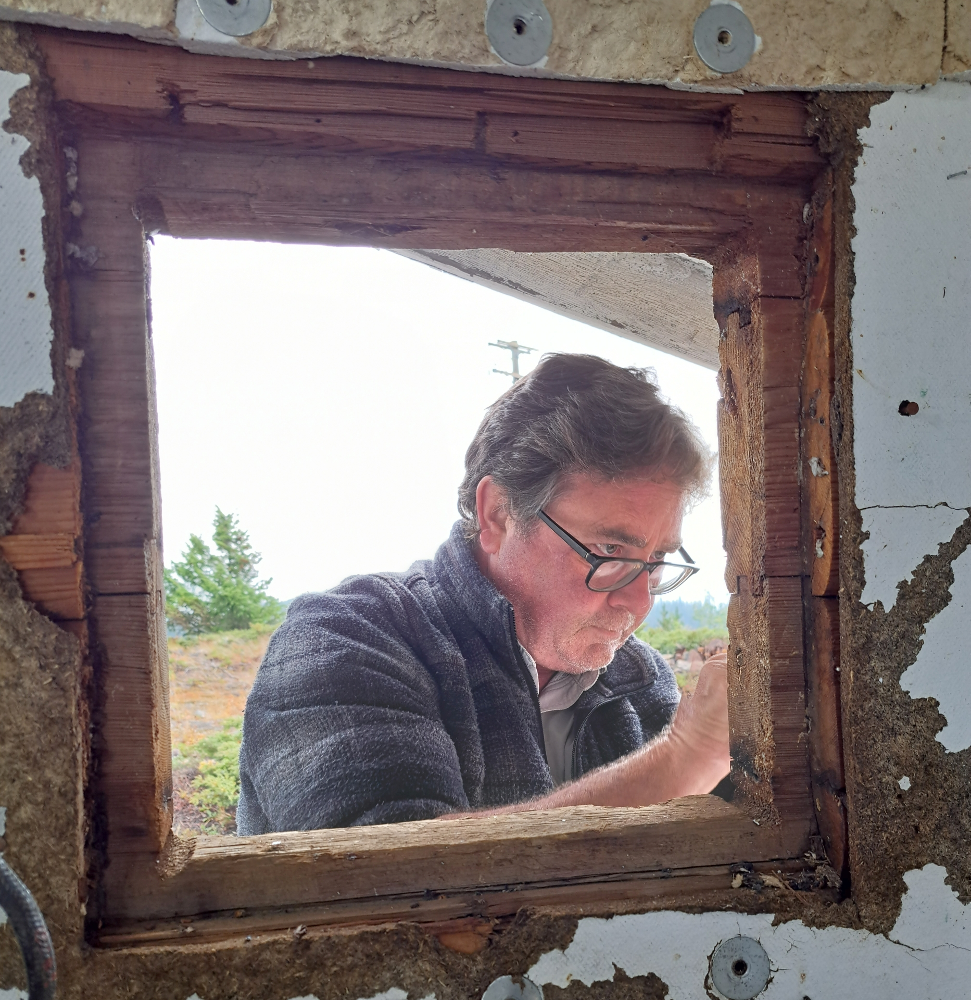
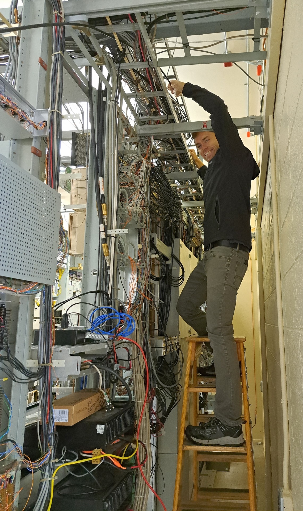

New Photo Albums uploaded
Back to StoriesStory 751
Sun, 2023-09-10 16:22 — VE7FSR


There are three new photo albums uploaded .
These are photos from the work parties that took place in July, August, and September at the Mt.
Lolo , Greenstone , Promontory Mtn and Iron Mountain repeater sites.
Myles VE7FSR and Lee VE7FET installed two new Rocket M5 microwave radios for the microwave link from Lolo to Greenstone Mountain, and Myles replaced two old Ubiquiti microwave radios on Greenstone with two new Mikrotik micowave radios.
The new radios should help improve the bandwidth and stability of our broadband backbone.
Ralph VA7VZA helped remove the old exhaust fan at Mt, Lolo and replace it with a small air conditioner, and Lee VE7FET removed the old Glenayre PA unit in the repeater and replaced it with a Motorola Quantar.
Lee VE7FET , also did some testing and monitoring with his SDR to see if he could find the source of the RFI that was causing interference to the VHF remote receiver on Mt, Lolo.
Lee also installed a temperature control to make sure the "new" air conditioner doesn't run when the outside air is too cold.
At Greenstone Mountain, Myles VE7FSR , Jordan VE7OSX , and Ralph VA7VZA , installed a new run of outfoor CAT5 cable, and installed a new Mikrotik LHG 52 ac microwave radio for a future link from Greenstone to South Forge Mountain (VE7LGN), as well as replacing an old Uibiquiti Bullet microwave radio with a Mikrotik Metal 52 ac microwave radio.
L ee VE7FET drove to Promontory Mountain and replaced the Ubiquiti Bullet radio there with a new Mikrotik Metal 52 ac radio.
Lee tweaked the software until he was able to get a stable and much faster link between Greenstone and Promontory Mountains, which should improve the backhaul from Iron Mountain considerably.
VE7HHS and VE7LTD tighten bolts.jpg At Iron Mountain in September, Myles VE7FSR , Dave VE7LTD , Ian VE7HHS , and Simon VE7RIZ worked together to assess and resolve the intermod issue that was causing issues with the VE7IRN repeater.
While there Dave and Ian discovered that the APRS antenna feedline had been nicked and was full of water.
After shortening the coax feedline and replacing the connector the APRS antenna tested OK and the APRS iGate was put back into operation.
Dave determined that the intermod issue seems to have been the result of loose bolts on the tower -- when the repeater was in transmit and the tower moved the loose bolts became diodes and rectified the RF causing noise on the input of the repeater.
The bolts on the bottom third of the tower (all we could access without climbing gear) were tightened and the noise seems to have been eliminated.
Thank you very much to Lee VE7FET, Jordan VE7OSX, Ralph VA7VZA, Dave VE7LTD, Ian VE7HHS, and Simon VE7RIZ for their assistance.
To view the photo albums click these links: legacy site link removed legacy site link removed legacy site link removed